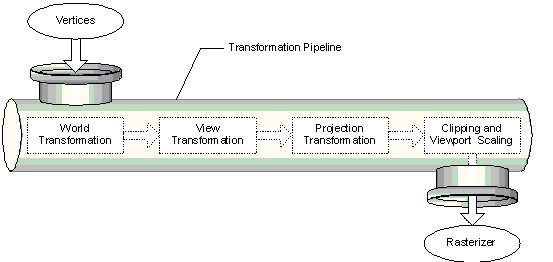

The part of Microsoft® Direct3D® that pushes geometry through the fixed-function geometry pipeline is the transformation engine. It locates the model and viewer in the world, projects vertices for display on the screen, and clips vertices to the viewport. The transformation engine also performs lighting computations to determine diffuse and specular components at each vertex.
The geometry pipeline takes vertices as input. The transformation engine applies three transformations—the world, view, and projection transformations—to the vertices , clips the result, and passes everything to the rasterizer. The following image illustrates the sequence of steps.

At the head of the pipeline, no transformations have been applied, so all of a model's vertices are declared relative to a local coordinate system—this is a local origin and an orientation. This orientation of coordinates is often referred to as model space, and individual coordinates are called model coordinates.
The first stage of the geometry pipeline transforms a model's vertices from their local coordinate system to a coordinate system that is used by all the objects in a scene. The process of reorienting the vertices is called the world transformation. This new orientation is commonly referred to as world space, and each vertex in world space is declared using world coordinates.
In the next stage, the vertices that describe your 3D world are oriented with respect to a camera. That is, your application chooses a point-of-view for the scene, and world space coordinates are relocated and rotated around the camera's view, turning world space into camera space. This is the view transformation.
The next stage is the projection transformation. In this part of the pipeline, objects are usually scaled with relation to their distance from the viewer in order to give the illusion of depth to a scene; close objects are made to appear larger than distant objects, and so on. For simplicity, this documentation refers to the space in which vertices exist after the projection transformation as projection space. Some graphics books might refer to projection space as post-perspective homogeneous space. Not all projection transformations scale the size of objects in a scene. A projection such as this is sometimes called an affine or orthogonal projection.
In the final part of the pipeline, any vertices that will not be visible on the screen are removed, so that the rasterizer doesn't take the time to calculate the colors and shading for something that will never be seen. This process is called clipping. After clipping, the remaining vertices are scaled according to the viewport parameters and converted into screen coordinates. The resulting vertices—seen on the screen when the scene is rasterized—exist in screen space.
Information on the fixed vertex and pixel processing pipeline is organized into the following topics.